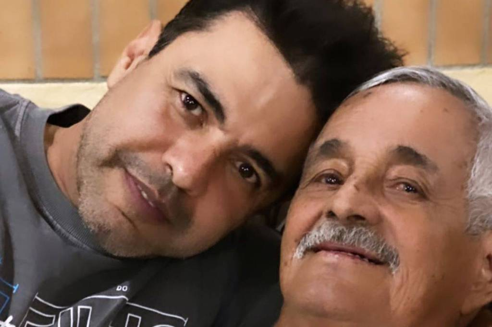

A estrada da Princesa Dona Francisca e a bucólica cidade de Campo Alegre
A Serra Dona Francisca, é um marco da beleza natural de Santa Catarina. Repleta de atrativos e vista privilegiada, ela liga Joinville ao
Planalto Norte.
Analista faz sucesso na web como 'Spider-Man de Jundiaí' ao ajudar moradores com ações voluntárias

Com a roupa do Homem-Aranha, rapaz de 33 anos faz visitas para as crianças que estão internadas no Grendacc e é conhecido
como o 'amigo da vizinhança'.
A intrigante estátua de Medusa em homenagem ao movimento MeToo em Nova York
"Medusa com a Cabeça de Perseu" dá novo significado à conhecida história da mitologia grega, segundo idealizador; nas redes sociais,
escultura foi criticada por algumas mulheres.
'Kit gay', nova música do Detonautas, satiriza bolsonarismo
É o sexto single lançado pela banda durante a pandemia. A música satiriza uma série de boatos propagados, principalmente,
pelos adeptos do bolsonarismo.
Hospital referência do Paraná distribui sorvete catarinense em ação social
O Pro Vita auxilia na reposição energética e proteica - 26% de sua composição é proteína de alto valor biológico –,
além de minimizar os efeitos colaterais da quimioterapia.